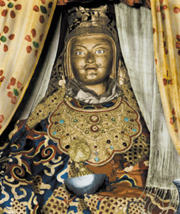
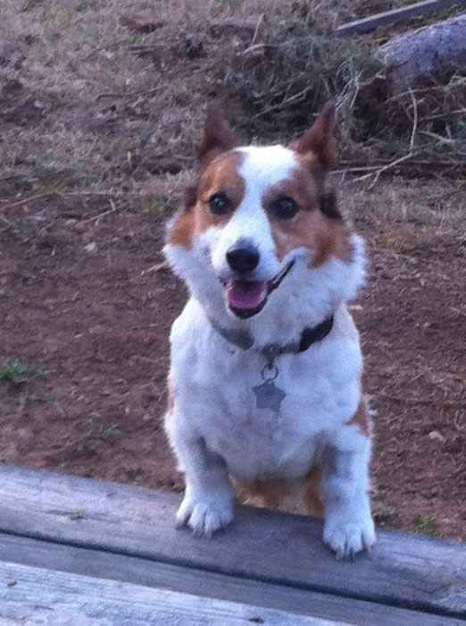
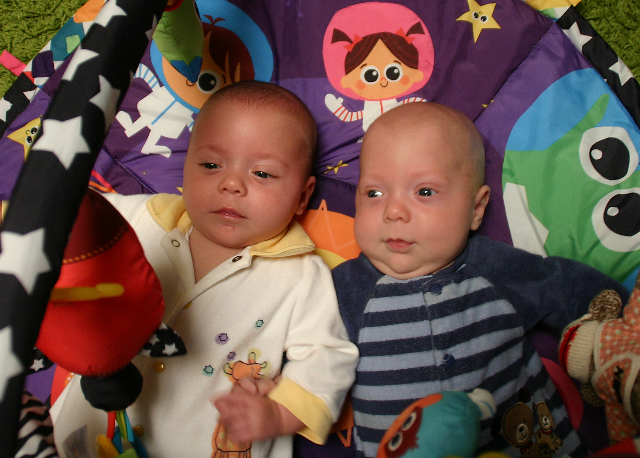
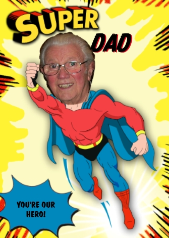
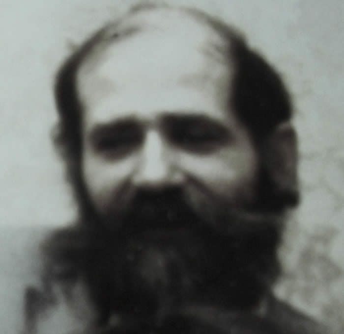
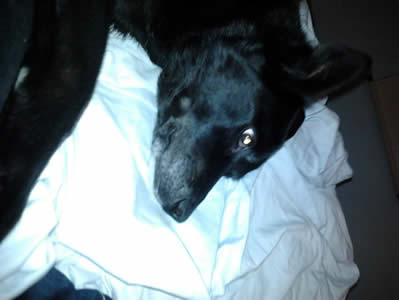
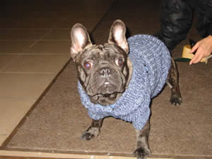
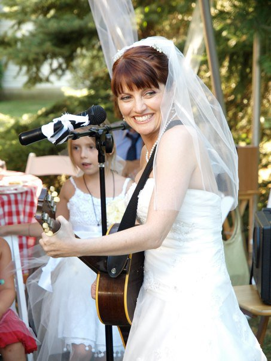
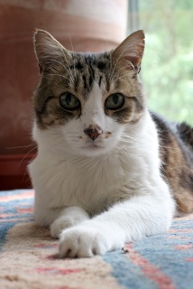

Prayer Requests
The Outer, Inner, and Secret Refuge Practice of the Mahasiddha Thangtong Gyalpo
Download the specific refuge prayer that Rinpoche suggested that we recite to support those in need entitled The Outer,Inner, and Secret Refuge Practice of the Mahasiddha Thangtong Gyalpo. The following is an excerpt from a talk given by Rinpoche on the significance of this prayer:

When you take refuge in the three jewels with devotion on behalf of someone who's died, the three jewels are immediately going to be there and see the whole situation clearly, since you're making that connection. Where can the deceased escape from the broad view of the three jewels? Their compassion, blessings, and guidance will be immediately there. Even though the dead don't know how to make that connection, if you make it on their behalf, they immediately make the connection as well. Therefore I think doing the practice of refuge, reciting the refuge over and over for the deceased, is very powerful, especially during the first forty-nine days. The prayer we should do is Avalokiteshvara's refuge prayer, called The Outer,Inner, and Secret Refuge Practice of the Mahasiddha Thangtong Gyalpo. This prayer is very helpful. I do it all the time, day and night, whenever there's a need. It was given directly to Thangtong Gyalpo's teacher by Avalokiteshvara himself for Thangtong Gyalpo to spread, and later he received it from his teacher and spread it. It has been one of the most powerful refuge prayers of all. I've given it to a few people to do it, to transform their life circumstances and different difficulties and patterns, and it seems like it really has worked wonderfully.
Current Prayer Requests
Below is a listing of names/photos of people connected to Sangha members who are ill or recently deceased. If you would like to add a person to this list please contact the MSB Secretary.
12/25/12
Please pray for our dear Boulder friend, Wren Fritzlan, who has been diagnosed with pulmonary fibrosis for which there is no cure. Wren's humor, kindness and spontaneous energy have been of such profound benefit in his work as a psychotherapist for over 25 years and director of a residential treatment program for the severely mentally ill.
Harriet and Jim Campbell
12/23/12
Dear sangha,
Please pray for my sister, Lynette Flett, who died today after a long battle with lung cancer, and for her children Catherine, Ruth, Aaron, Rachel and Daniel and all her family. Thank you. Helen Connole.
12/15/12
"This is the most incomprehensible tragedy of insanity. There is no way to even begin to understand what has happened. We can only sit with the overwhelming sadness and loss of the innocent. The guardian of humanity could not have to face anything more grave than losing the young unopened buds that were on their way to bloom. We pray that some relief may come in this time of loss and to the broken hearts of the parents, family members, and our countrymen and women. This kind of tragedy is happening way too often in our country, where only a few miles away in Canada, it is a rare occurrence. I join my palms in prayer for America to find a positive resolution to this problem." --VDKR
11/25/12
Please pray for Coco, my sister Roopa's dog, who passed today at 3 AM. He was 9 years old, and battled bladder cancer for 2 years. He was a good companion and loving happy guy.
Thank you,
Moni

11/20/12
Dear Sangha,
Please say prayers for Andrew Quintanna who is suffering from a heart condition and is in the hospital this week. His cheerfulness and lack of self pity is truly inspiring. May he recover quickly and continue to benefit others.
Gretchen
11/20/12
Dear Sangha,
Please say prayers for Anne Marie DiGiacomo. Her father passed away peacefully Sunday morning. Please say prayers for his time in the bardo and his rebirth and for Anne Marie in this time of sadness and loss.
Thank you,
Gretchen
11/16/12
All must pray for Isreal to back down and not invade Palestine. Too many have died. We must turn our minds to peace.
Mary Newton
10/11/12
Dear Rinpoche and MSB sangha,
My nephew's little baby Richard is back in the hospital. This morning his mother noticed head enlargement and baby R was readmitted with fluids in the brain. The shunt in his head has failed so the little guy is going in to replace the shunt. The replacement is not entirely unexpected, but not so soon. I have attached a photo of babies Richard and Wren at home before this situation arose. The parents are deeply concerned for the child's future, and my brother and sister-in-law are exhausted by the ups and downs. Jim and I are on the way to CA to support these dear people. If you would please include these little ones in your prayers, we would all be most grateful. Thank you.
Harriet Campbell

10/4/12
Dear Sangha,
As mentioned at the Vajra Assembly, Rinpoche has encouraged us to reach out to one another, especially in times of need. In that spirit, here is Erris McCullough's (who has been recently diagnosed with cancer) contact info:
Erris McCullough
2391 Donna Dr, Eureka CA 95503
(703) 939-2774
errism@hotmail.com.
10/4/12
Please pray for the family of my brother-in-law Réné Hamel who is in his last days of life. May they find harmony, his one wish and worry for the well being of his daughter. Réné himself has made an inspiring transformation to a place of peace and kindness over the last months. May he be able to rest in openness as he leaves his present life.
Thank you,
Jill
10/1/12
My mother, Catherine Roberts, peacefully passed away last night in her sleep. She was an incredibly loving, generous mother to six children and a warm friend to many, many people. She was 95 years old.
Bill Roberts
9/28/12
Dear friends, dear Rinpoche,
I am sendng a photo of my friend's father...(excuse the image), it's the only one he had to hand. This gentleman, Frank Perry, had surgery to his ankle last week, and five days later, is in intense pain and is very weak and distressed. I would like to request prayers, please, for a swift recovery and reduction of pain, etc. Thank you so much, from the heart,
Joanna Fagg, Italy

9/24/12
Please say prayers for Bataan Faigo who passed away Sunday, September 24 in China. Bataan was well loved by so many and was a master of Tai Chi. He leaves behind two daughters. May his transition with clarity through the bardo.
Thank you,
Gretchen
9/24/12
Please pray that I and all beings who have cancer and other illnesses be healed and have all the love and support and resources needed, and that my practice heart and mind stay strong through treatment and healing. Love and gratitude, Erris
9/15/12
Please say prayers for my very dear friends in Sudan and all the people in the middle east who are in danger from the violence now, and for the school community that lost its school to this violence. May the protesters find peace and turn away from violence.
Please say prayers for speedy recovery and support after my second cancer surgery a week ago. Doctor said I'd go to chemo and further, In Gratitude and love to you all, Erris. errism@hotmail.com
9/12/12
For Sandra Scales:
I would like to ask the noble sangha to keep our fellow sangha sister and beloved friend to many dharma practitioners across continents, in your prayers over the next few weeks as she undergoes more surgery in San Francisco next week. Please pray for a successful outcome to the surgery and for the permanent healing of her body. Thank you-Janine
9/12/12
Please pray for my my partner Andrzej who was attackedby a stranger and injected with a syringe filled with HIV. He is now taking strong medicines that are making him feel unwell. He will have to be on these drugs for the next 3 months, and after 6 months it will be determined whether he is infected or not.
9/11/12
Please say a prayer for the rebirth of my Great Aunt Margit so that she might meet the Dharma in her next life. She passed away in Sweden this weekend and was nearly 102. She was cheerful and kind.
Gretchen
9/5/12
Dear Sangha,
Please pray for my friend Andres Vallejo, who commited suicide. After being in a coma for a couple of weeks he died on August 29. Please also pray for his family, to help them trough these hard times.
Thank you
Natalia Sarrazin
8/27/12
Thanks to everyone for prayers for my nephew's premie babies in CA. Baby Wren came home two weeks ago and Baby Richard was released from the hospital to home on Saturday, 8/25. So far they are doing okay and the family is very relieved and happy.
Harriet Campbell
8/27/12
My dear brother François Leterrier just died recently (July), ending his life that was becoming unbearingly painful with an advanced parkinson disease.
I am deeply grateful to you to add him to your prayers.
Thank you from the bottom of my heart.
Om mani padme om
Mireille

8/27/12
Please, pray for Maria Elena Arellano, my mother in law. She died august 16th with 98 years old. She was a sweet woman and faithless. I pray that the blessings of the Three Jewels reach her. Thanks to Rinpoche for this wonderful prayer of refuge.
Constanza Aguilar
8/16/12
1. Please pray for Charlie, my kind-hearted troubled neighbor who commited suicide (8/15 or 16, 2012), that he may find peace now in the bardo and in lives to come.
2. Please pray for my 19-year cat, Midnight, who passed (8/11/12), sweet always to the very end. And also for Tiger, Midnight's 20-year-old mother and life-long companion, who is having a very hard time.
Thank you for your prayers -- Judy
8/22/12
Please include my chosen family member Bill Brent in your prayers. After many years battling with depression and pain, Bill jumped off the Golden Gate Bridge sometime this past weekend. Thank you. Lois Hoeffler, CA sangha.
8/11/12
Please pray for my brother John Keller and his family. The end of his life is nearing as the cancer is no longer treatable. My prayer wish for him is that his physical and emotional pain of leaving this life are helped and met with compassion and loving kindness. I am grateful he is in the light of all the people he has loved so fully. May all the people who love him have what they need as they love, care, and support him and each other.
Please pray for Briall Rose Dang, a young girl who died too early, and suffered too much in her short life. She was 18 years old.
Thank you, Kate Keller
7/18/12
Dear Sangha,
I am amazed at the power of our protectors and Rinpoche's protection.I am euphorically optimistic. The doc has reversed the chemo order, and says it's amazing how small the initial examining doctor caught this tumor. They will be checking me again later. I feel that I can now work on this from a place of strength. Thank you so much, you have all been very kind. If you want to keep up on my situation and healing as i continue to go through the maze, send me an email and I'll put you on the list. Also any references on colon cancer and health are gratefully invited.
May we always be able to benefit beings through our practice and study and prayers.
Love and gratitude,
Erris
I have been diagnosed with colo-rectal cancer, not staged yet and see the doctor tomorrow for more specifics beyond "you will be doing chemo and radiation." I may be coming back to Boulder, stay tuned on that.
I feel very strongly that the best way that sangha in general can suppport me is to say prayers. Also if you would, please also pray for my Daughter Mikhaela and all of my family to be strong and maintain good state of mind I am praying for my mind to be clear, and with the inevitable fogginess of chemo and radiation that I will have support to practice and study and keep bringing me back to the nature.
In terms of practical support, I want to start a blog, and people will be able to reference that for more information. You are all warmly invited to email me at errism@hotmail.com. The survival rate for this seems to be very good-high percentages.
Already I have such good moral suppport from good friends such as Daniel Hess, who has immediately begun cheering me on.
I love you all, and I want you to know that I am feeling well and very fortunate to have such a treatable cancer.
Your sangha sister,
Erris
7/7/12
Please pray for my mother who is almost 97. This past week I was with her, my brother and sister helping with her transition to hospice care. She is very afraid of dying.
With gratitude for the many kindnesses of the sangha and our teachers, and the comfort of the teachings. Tina Toriello
6/28/12
Please pray for Kyle Renier Davis; Kyle was killed in a car crash 4/29/12. His brother, Colin, was driving and was DUI. Thank you, Ani Nyima
6/27/12
Please pray for the Sudanese people andfor a peaceful resolution. my good friend tells me it's getting worse there and many friends are missing and in jail, many people have died, and people are starving in Darfur where the aid agencies have evacuated.
Erris
6/24/12
Thanks for all of your loving support and prayers. Frodo died peacefully, in his sleep around 5:30 pm. last night (Sat. 6/23), while refuge prayers were being said for him. Please continue to pray for him as he makes his next transition!
Laura Budz
6/12/12
Dear Sangha,
I just learned from my nephew, Caspar, in California that his baby boy, Richard, who was doing well, has taken a dive and has bacterial spinal meningitis. The little child, born 10 weeks prematurely, and his parents Caspar and Brooke Wagner, are suffering greatly. The other tiny twin girl, Wren, seems to be doing okay. If you would kindly hold them in your prayers, I would be so grateful.
Harriet Campbell
6/7/12
Please pray for my father, Sydney Albrittain, who died June 5.
Also, please remember my mother Gloria and all my family in your prayers, may we find peace in our hearts and with each other.
In loving kindness,
Mary Albrittain
5/25/12
Kindly include two tiny babies, Richard and Wren Wagner, who have been in the neonatal ICU at Stanford University for 3 weeks. They were born C-section, 2.5 lbs each, 27 weeks early and are struggling to survive. Their parents are my nephew, Caspar Wagner and his fiance, Brooke, are on a roller coaster of hope and fear. Thank you all.
Harriet Campbell
5/11/12
Please pray for my beloved friend and sangha sister, Christine Keyser, who passed peacefully at 6:50 this morning in Berkeley, Ca. She was a generous, good friend to me and to many others, a dedicated servant of the dharma, and a tireless advocate of animals and the environment.
Thanks, Judy
5/7/12
Dear Noble Sangha,
Kindly pray for all people suffering from mental illness and for my son, Asa, who is in a psychosis.
Thank you.
Ani Nyima
5/1/12
Please say prayers for Judy Jackson who passed away in a terrible car accident in Texas Sunday April 22. Judy was a childhood friend who helped me a great deal in Jr. High.
thank you,
Gretchen
4/26/12
Dear Sangha,
Thank you for your prayers for Ma Jaya Sati Bhagavati, a teacher who has benefitted many. She passed on April 13 from pancreatic cancer. She will leave behind Kashi ashram which is suffering from uncertainty and great grief. This was my family for 25 years, and there is great good heartedness and bodhichitta there. Please hold them all in your prayers. Thank you, Ram Jyoti
4/1/12
My dog Bella died last friday 3/23 peacefully. She was my best friend and I loved her so much. Can you please add her to the prayer list request for her high rebirth? She helped me through some really hard times. Maria

3/24/12
I would like to request prayers for my Father Sal DeGuarda who passed away March 4, in Walnut Creek, CA. He suffered much mental anguish towards letting go of his body and this life.He had energy and zest for life that amazed people half his age. He also had a project, a statue on Treasure Island,that he said over and over he would not die until he completed.Seeing this larger than life man having to let go was very difficult. I am so thankful to have Dharma practice and a wonderful SPR Therese, who helped me to help him through this. He was 93 and did exit peacefully.
And who knows maybe one day we will drive over the Bay Bridge and there will be his statue, Pacifica waving at us.
Thank you, Daralyn
3/24/12
Please say prayers for April Sauerwein, who is having breast cancer surgery March 14th. She is in Arlington VA.
3/24/12
Dear Sangha,
On Sunday night 3/11 at 3 am 5 young people were involved in a car accident in the Baca. Travis Tim was killed. Colin Drew is in intensive care in Denver and very badly injured. The others are Zack Lamaster, the driver, and Maxie and Rheena whose last names I don't know at this time, nor their conditions. Please hold them in your hearts and your practice. This is a dreadful tragedy for the Crestone community and blaming will no doubt occur. May all those lives are touched by this find the help they need and heal in every way. The prayers of the sangha are so powerful.
Harriet Campbell
3/15/12
Liv Opheim, Marvin Casper's wife, died unexpectedly in her sleep on Friday night. Her sukhavati will be on Thursday, March 15 from 4-6 p.m. at the Shambhala Center. Please offer your prayers for Liv and her family.
Thank you,
Kristin
3/3/12
Just wanted to report that my niece is home and is back to school. She's not quite herself, but has more or less made a full recovery. Thanks for all the thoughts and prayers.
Todd Brashear
2/28/12
Please include my aunt Brenda Hewett in your prayers. She died February 23rd.
Thank you,
Rosemary Norton
2/23/12
I am requesting a prayer request for my cousin, Stanley Kosciak, who took his life on February 13, 2012 also for his family, relatives, and friends who have been deeply saddened.
Thank You,
Janice Solek-Tefft
2/2/12
I request prayers for my dog Donnie, who passed away December 17, 2011, around 8:45/9 PM Italian time +8 in the Milan area, Italy.
Donnie was born May 12.2002 in Marion, Kentucky.
This Saturday, February 4, is the 49th day.
Thank you so much in advance,
Laura

1/27/12
Please include in your prayers Ma Jaya Sati Bhagavati, who was my teacher for 25 years, the leader of Kashi Ashram, and who continues to inspire many people. She has been diagnosed with stage 4 pancreatic cancer which has gone to her lungs. Thank you. Ram Jyoti
1/24/12
Thank you for your prayers for Elinor Hoke whose son Peter Hoke committed suicide on January 16th, at the age of 29.
Janine
12/27/11
Please pray for my father who had a heart attack early Christmas morning.
I wish to ask the Sangha to please keep him in their prayers right now and dedicate some merit to him that this may be a blessing in disguise and he may have a swift recovery.
It is hard not to worry about our parents right now as they age and encounter health problems...i know many of our parents are facing that right now, so let us dedicate this also is to all our parents who are facing old age and illnesses.
with much love,
Jennifer
12/17/11
My uncle, Reggie Kaese, has been having heart problems and seems to be in his last day of life. He has been suffering with a lot of pain and fear for the last month and is now unconscious.
Please pray for him and my aunt, Kris Weller.
Thank you,
Kristin
12/6/11
Please put Scott Bliss on the prayer list. He and his wife are dear friends and he was called to Stanford early this morning and is in surgery right now for a lung transplant.
Thank you,
Robin Correll
11/29/11
Dear Noble Sangha,
Please include my mother, Jeanette Bennett, (Nicholas' and Traven's grandmother & great-grandmother to Josh and Shiva) in your prayers. She passed away peacefully about 5:15 this morning (11/29), CST, with my dad at her side. Also pray for my dad, Charles Bennett, who has health problems and will miss his wife of 70 years very much. Thank you.
Love,
Sarah
11/27/11
Dear Sangha,
My mom, Linda Holland, is having a mass removed from her breast on Tuesday morning, November 29th. Please include her in your prayers.
Thank you,
Chris Holland
11/27/11
Michal Lura Friedman lost her life on Friday, November 25, 2011 in New York City, due to complications from a c-section shortly after delivering healthy twins, Jackson James and Reverie Vivian Snyder. Michal was a beautiful, talented woman who was thrilled to be pregnant with her first children. Many of you know "Michal the Girl" as a musician, but her greatest dream was to be a mother. For seven long years she and Jay tried to make this dream come true. Michal was widely loved, and leaves behind loving family and many friends in her Buddhist and music and voice communities. Please pray for Michal and her family.

11/17/11
Dear Sangha,
I am grateful for the prayers and kindnesses extended to us during my dog Thaddeus’ sickness and death. Thaddeus and I were able to join the welcome party for Rinpoche’s teaching at Gomde in California. Shortly after the weekend teaching, Thaddy was able to leave this life with ease and peace, surrounded by loving arms.
Thank you, Tina Toriello
11/17/11
Dear Noble Sanga
Please pray for Lynne Paquet and her parents Monique and Alzir Paquet. Lynne is in her last days dying from cancer. She is suffering tremendously physically and mentally. May she have a good rebirth and find peace mentally. Thank you
Jill Oppenheimer
11/11/11
Dear Sangha,
Please pray for Judy Dercum whose cancer has returned. She will have surgery on Tuesday. Please hold her in your prayers that she will have a successful outcome with her treatments.
10/23/11
Dear Noble Sangha,
Smudge passed at 16.20GMT on Sunday 23rd October. I would very much appreciate your prayers for him to be reborn in Dewachen without other births intervening. He has been my loving companion for 20 years and bore the cancer with great nobility and dignity. He died in peace and equanimity in the living room.
Yours in the dharma,
Jennie

10/20/11
Dear Rinpoche and Noble MSB sangha, please keep my cousin, Fernando Ramirez, in your prayers. He died of liver cancer this past Wednesday, October 19 at 5:15 AM in Colombia. May he, through the power of our prayers, find a good rebirth and a connection to the Noble Dharma, and find liberation so that he himself be able to benefit countless beings as well. Thank you all very much.
All the best,
Alex